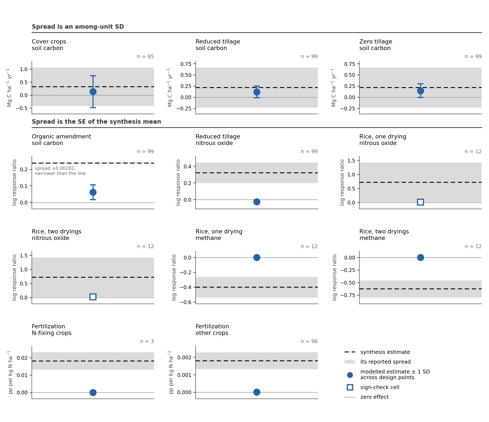
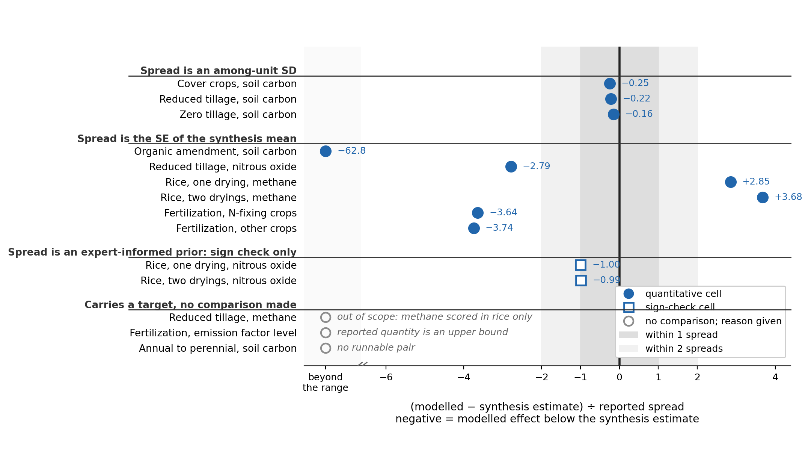
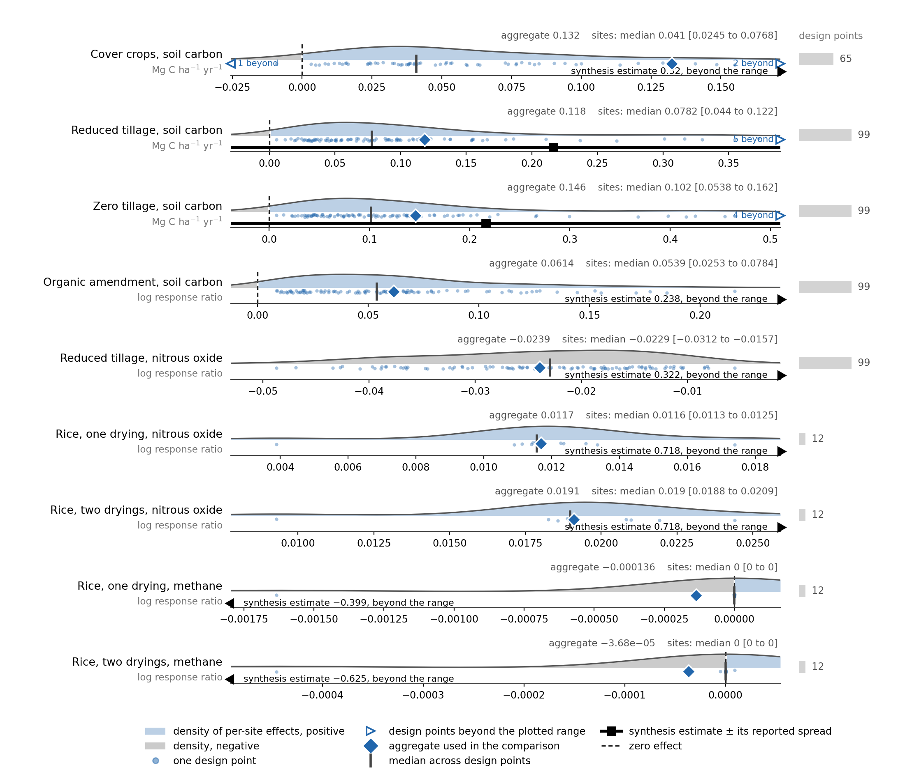
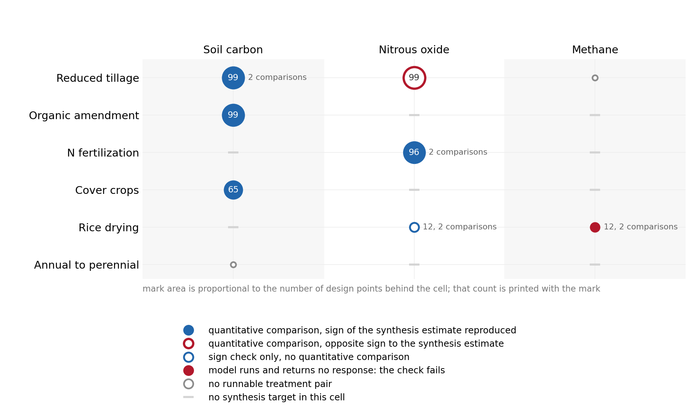
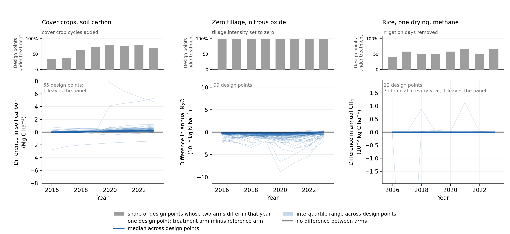

Statewide Management Treatment Effect Benchmark
MAGiC Modeling Framework (Task 2) – supporting report
Overview
This report compares modelled management practice effects at the statewide cropland design points against effects summarised from the published literature, and records which comparisons the model can and cannot presently support.
It is a forward comparison at fixed parameters. No parameter was adjusted to any target here, no evidence was weighted into a likelihood, and no inventory estimate is produced. The site-level parameter calibration is reported separately; this report carries that parameterization forward to the statewide design points and asks whether the resulting practice effects are consistent with the synthesis evidence.
We ran six management practices as paired treatment and reference arms at 99 design points over 2016 to 2023, covering soil carbon, nitrous oxide and methane. Thirteen practice-by-outcome cells carry a synthesis estimate. Eleven of them have a modelled estimate to compare against it; the other two have no runnable treatment pair.
The result divides cleanly by outcome. Soil carbon responds to all three carbon-adding practices, in the right direction and at roughly half the reported magnitude. The greenhouse gas cells are near zero, of the wrong sign, or produce no response at all. Most of the gas discrepancies can be traced to the model formulation rather than to parameter values, which is the most useful thing this benchmark tells us: they will not be resolved by recalibration.
Summary of findings
| Outcome group | Status | What the benchmark shows | Remaining work |
|---|---|---|---|
| Soil carbon, three practices | Reproduced | Cover crops, reduced tillage and zero tillage all raise soil carbon at essentially every design point, within a quarter of the reported among-site spread | Re-run with a parameter ensemble so the comparison carries parameter uncertainty |
| Soil carbon, organic amendment | Underestimated | Modelled effect is about a quarter of the synthesis estimate; consistent with the amendment pathway identified in the site-level calibration | Add an amendment carbon partition to SIPNET and re-run the cell |
| Nitrous oxide, tillage | Wrong sign | Model lowers N2O at all 99 design points against a positive synthesis estimate; tillage enters only as a respiration multiplier | Review the tillage N2O pathway; a physical mechanism is required |
| Nitrous oxide, fertilization | Not produced | Emission factor is constant in nitrogen rate by construction, against a synthesis estimate of a rise with rate | Review the N2O formulation; first-order mineral N cannot produce the reported response |
| Nitrous oxide, rice drying | Direction reproduced | Both drying intensities give the reported sign; magnitude was not under test | Obtain a quantitative target so the cell can be scored, not only sign-checked |
| Methane, rice drying | Failed | Arms are identical in every year at most design points; the check fails rather than being absent | Represent flooding and draining explicitly; the prescribed drying never dries the soil |
| Methane, tillage; annual to perennial | No runnable pair | The event package contains no arm expressing these treatments | Stage the arms, or record the cells as out of scope for this matrix |
Benchmark design
Each practice is run as a pair: a treatment arm and a reference arm that differ only in the management event file. Meteorological drivers, initial conditions, parameters, executable and configuration are identical between the two arms, so the difference between them isolates the practice and nothing else.
The model side is aggregated before any comparison with the evidence. Each design point contributes one paired effect, the per-site effects are summarised to a single modelled estimate per target cell, and only that estimate is compared with the target. Design points are never scored individually against a target, because the targets are summaries across studies rather than predictions for a particular California field. Scoring each design point separately against the same synthesis number would count one piece of information repeatedly, and the apparent precision would then be set by how many design points we ran rather than by the underlying data.
Targets are keyed by practice and outcome, so each cell is one practice acting on one greenhouse gas. Where a target distinguishes subclasses, such as crops that fix nitrogen against those that do not, the modelled design points are split the same way. Each target row carries its own units, sign convention, spread type, and the observation operator stating how the modelled quantity must be formed to match it. The operator differs by cell: a soil carbon stock log response ratio for amendments, a flooded-season total for rice, a per-cover-year rate for cover crops, and the slope of the emission factor against nitrogen rate for fertilization. The scorer reads all of these from the target row rather than assuming them.
For the fertilization cells the emission factor is taken over mineral nitrogen applied. A fertilization event carries separate mineral nitrogen, organic nitrogen and organic carbon fields, and across the four fertilizer arms only mineral nitrogen differs; organic nitrogen and organic carbon are identical between arms. Organic nitrogen can mineralize and contribute to nitrous oxide, but because it is the same in both arms that contribution cancels in the paired difference, and organic carbon is not a nitrogen input at all. Mineral nitrogen is therefore the quantity the paired contrast actually varies, and the denominator the induced emission factor is formed over.
Model configuration
| setting | value |
|---|---|
| model | SIPNET v2.2.0 (Longfritz et al., 2026) |
| options | nitrogen cycle, anaerobic decomposition, flooding and litter pool enabled |
| window | 2016-01-01 to 2023-12-31; soil carbon endpoints at 2016 and 2023 |
| design points | 99 |
| runs | 958 arm runs forming 683 eligible pairs |
| parameters | v1.0 statewide plant functional type trait medians |
| ensemble | one member at the parameter medians |
Photosynthesis optimum, soil organic matter respiration rate, litter breakdown rate, the fraction of litter respired, the soil respiration temperature sensitivity, the carbon-to-nitrogen decomposition constant and the anaerobic transfer exponent are run-level and pinned in the run configuration. They are written into the default parameter file and dropped from the trait samples, so a plant functional type posterior cannot overwrite them. All 958 arm runs therefore carry identical parameter values.
Of the 683 pairs, 495 are prepared from the management record directly and 188 are prepared with stated assumptions where the record was incomplete. Every pair passed the pairing check.
Relationship to the site-level calibration
The soil process parameters used here were conditioned on a single amended field trial in the site-level calibration. The synthesis targets are global syntheses and none of them is that trial, so the comparison is out of sample in site, crop system and soil.
It is not fully independent validation, for two reasons: the soil parameters were conditioned on an amended trial, and whether any synthesis includes that trial among its primary studies has not been audited. Results should be read as an out-of-sample check on the statewide parameterization, not as independent validation.
How a cell is scored
A target cell is one practice crossed with one outcome. Each cell carries a synthesis estimate – a single number summarising the published literature for that practice and outcome – together with a reported spread.
The standardised discrepancy is the modelled estimate minus the synthesis estimate, divided by that cell’s own reported spread. A negative value means the modelled effect sits below the synthesis estimate.
That number cannot be read without knowing what the reported spread describes, and the cells divide into two groups on exactly this point.
- For three cells the spread is an among-unit standard deviation – the variation across the plots or sites the synthesis pooled. Dividing by it asks whether the modelled effect lies inside the heterogeneity the evidence itself observed.
- For the remaining cells the spread is the standard error of a synthesis mean, which describes how precisely the synthesis pinned its average, not how much real fields vary. Dividing by it asks a much stricter question, and on a synthesis built from many comparisons this standard error is small enough that any model value is many multiples away from the centre.
Two cells are scored as a sign check rather than quantitatively, because their spread is an expert-informed prior rather than a reported dispersion. For those, the only question asked is whether the model moves in the reported direction.
Reading the two groups as though they answered the same question would misrepresent both, so they are kept apart in every figure below.
Results
Agreement by target cell

n is the number of design points.The three soil carbon rate cells land inside their bands. Cover crops give 0.132 against a synthesis estimate of 0.320 Mg C ha-1 yr-1 (Poeplau and Don, 2015), reduced tillage 0.118 and zero tillage 0.146 against 0.216 (Sun et al., 2020). In each case the modelled effect is roughly half the synthesis centre but comfortably within an among-site spread of 0.74 and 0.448 respectively.
The organic amendment cell is the clearest case of the second group. The modelled log response ratio is 0.061 against a synthesis estimate of 0.238, but the reported spread is a standard error of 0.0028, so the discrepancy is 62.8 spreads. The interpretation is not that the model is 62.8 times wrong; it is that this synthesis estimate is pinned far more tightly than any single model realisation could match. The modelled effect being about a quarter of the target is the substantive result.
The two rice nitrous oxide cells pass their sign check: both are positive, 0.0117 and 0.0191, against a positive synthesis estimate of 0.718 (Jiang et al., 2019). The two rice methane cells do not pass. The modelled effects are −1.36 × 10-4 and −3.68 × 10-5 against synthesis estimates of −0.399 and −0.625 from the same source. The sign is nominally right but the magnitude is four orders of magnitude short, which is indistinguishable from no response at all.

Read with the grouping, the figure separates cleanly. Every cell whose spread is an among-unit standard deviation sits well inside one spread. Every cell whose spread is a standard error of a synthesis mean sits outside two.
Spread across design points

Three things are visible here that the aggregate alone conceals.
The distributions are right-skewed, so the mean sits above the median in every soil carbon cell. Cover crops have a median of 0.041 against an aggregate of 0.132; zero tillage a median of 0.102 against an aggregate of 0.146. The aggregate is carried by a minority of strongly responding design points while the typical design point responds far less. Reporting the aggregate alone would overstate how uniformly the model produces a cover crop effect.
The sign is consistent almost everywhere. Cover crops are positive at 97 percent of design points, and the organic amendment and both tillage soil carbon cells at 100 percent. Reduced tillage nitrous oxide is negative at every one of its 99 design points, with the largest value −0.0055, so the disagreement with the positive synthesis estimate is not caused by averaging positive and negative site responses.
The rice methane rows are a spike at zero. Median and both quartiles are exactly zero for both cells. The two arms are bit-identical in every year at 9 of 12 design points for a single drying and 8 of 12 for two dryings.
Benchmark coverage

A model that runs and returns no response has failed the check it was set; it has not escaped it, and further investigation is warranted. The figure draws that case in the failure colour rather than greying it out. The two rice methane cells are the instance, and they matter more than their size suggests: the response of methane to alternate wetting and drying in rice is the outcome this part of the evidence set was assembled to test.
Two cells are genuinely empty rather than failing. Reduced tillage on methane and the annual-to-perennial conversion have no runnable treatment pair, so there is no modelled estimate to place. Three fertilization contrast arms were run and produced effects, but the evidence table contains no fertilization contrast target for them to be scored against; they are retained in the run outputs and left unscored.
How the differences develop

The exposure strip explains a good deal. Cover crop exposure is not uniform across the window: 34 percent of design points carry a cover crop in 2016, rising to 80 percent by 2022, with a median of 6 cover years per design point and a range of 1 to 8. The soil carbon difference is correspondingly flat through 2016 to 2018 and separates from zero only as exposure rises. Rice drying never exceeds 67 percent of its design points in any year. Zero tillage is the only practice applied at every design point in every year, which is why its nitrous oxide response is the tightest bundle in the figure.
Interpretation
The discrepancies do not all have the same origin. Some are differences in the magnitude of a response the model does produce; others arise because the model formulation does not contain the mechanism the evidence describes. The distinction matters because parameter adjustment cannot recover a response the equations do not permit.
| response | current model mechanism | benchmark outcome |
|---|---|---|
| cover crop soil carbon | carbon and litter dynamics | reproduced, about half the reported magnitude |
| reduced and zero tillage soil carbon | tillage as a respiration multiplier | reproduced, about half to two thirds |
| organic amendment soil carbon | amendment carbon enters the litter pathway | reproduced but underestimated |
| reduced tillage N2O | indirect respiration effect only | produced with the wrong sign |
| fertilization N2O emission factor | first order in the mineral nitrogen pool | target response not generated |
| rice N2O | mineral nitrogen and moisture | direction reproduced, magnitude small |
| rice methane | moisture-gated methane production | no response; check fails |
Soil carbon responds; the gases do not. All three carbon-adding practices raise modelled soil carbon in the right direction. Every nitrous oxide and methane cell is near zero, of the wrong sign, or a null. The failures are concentrated on one side of the model.
The amendment cell restates the calibration residual. Amendment carbon enters SIPNET as fresh litter, with no partition to a more persistent soil pool. The site-level calibration identified the same pathway; the statewide benchmark reproduces the limitation at a larger scale, and the same model change addresses both.
Tillage nitrous oxide is a mechanism problem. Tillage enters as a multiplier on heterotrophic respiration. There is no compaction, pore-space or oxygen-transport pathway through which reduced tillage could raise denitrification, which is why the modelled effect is small and of the wrong sign at every design point. The consistency across all 99 design points confirms this is structural rather than a parameter artefact.
The fertilization dose-response cannot be produced. Nitrous oxide is first order in the mineral nitrogen pool, so induced emissions are proportional to nitrogen applied and the emission factor is constant in nitrogen rate. The synthesis estimate is a rise of the emission factor with rate. Adjusting the existing parameter cannot generate that; an additional nonlinear mechanism would be required.
Rice methane is a water balance result, not evidence about drying. The prescribed drying events do not produce a realized loss of saturation. Soil moisture stays above water holding capacity throughout the window in both arms, with a minimum of 1.02 times capacity, so the clipped water fraction is one and the anaerobic index sits at its ceiling in the drying arm exactly as in the irrigated reference. The methane moisture response is that index raised to the anaerobic transition exponent, and one raised to any exponent is one, so no value of that exponent can recover a contrast. Two thirds to three quarters of rice design points returned an effect of exactly zero. This should be read as the comparison not having been made, and as a check the model failed, rather than as evidence that drying events do not affect methane.
Aggregating first matters. Because the model side is summarised before comparison, a cell can agree in aggregate while the underlying site distribution is wide or skewed. The cover crop cell agrees with its target and is simultaneously the least uniform cell in the matrix.
Limitations
- This is a single ensemble member at the parameter medians. The spread reported per cell is variation across design points at fixed parameters and contains no parameter uncertainty, so no uncertainty statement about practice effects should be taken from it.
- Nitrous oxide and methane outputs are uncalibrated. No nitrogen or methane parameter was estimated in the site-level calibration, and most of the scored cells are gas cells.
- The reported nitrous oxide quantity is total mineral nitrogen volatilization rather than a partitioned N2O flux, so its absolute level is not comparable with a measured emission factor. The dose-response result is a ratio and is unaffected. The induced emission factor has not equilibrated over the window, rising through to the final year without reaching a plateau.
- The soil carbon parameters come from a single field trial in one cropping system. Applying them across the full range of California cropland is extrapolation.
- Targets are global syntheses, not California-specific. The organic amendment target is partly comparable at best, and for the fertilization cells the published crop classes match this panel poorly, since most fertilized design points are orchard or pasture and the N-fixing class carries only three.
- Agreement in a cell is agreement of aggregates. Per-site effects vary widely, and in the cover crop cell the aggregate is not representative of the typical design point.
- Tillage soil carbon and both rice outcomes each map two arms onto one target cell. Those rows share a target and are not independent estimates of it.
- Two cells returned no usable comparison. Absence of a result there is not evidence of agreement.
- No site in the companion site-level dataset carries both soil carbon and a greenhouse gas flux at useful density, so a parameter set that reproduces soil carbon has not been tested against methane in the same system. There is no measured practice contrast anywhere in the Delta and none under rice, which is precisely where this synthesis evidence carries the weight.
Next steps
Work that follows directly from this benchmark, in priority order.
1. Add an amendment carbon partition to SIPNET. A fraction of organic carbon added by a management event should enter the soil pool directly rather than the whole amount passing through fresh litter. This is the single change that addresses both the statewide amendment cell and the residual identified in the site-level calibration. Re-run the amendment cell after the change.
2. Represent flooding and draining explicitly for rice. The drying events are prescribed but never realized: soil moisture stays above water holding capacity in both arms, so the anaerobic index is at its ceiling throughout and the two arms are identical. This is a water balance limitation rather than a parameter setting. Reducing the drainage fraction and reducing the total water applied were both tested and neither produced a dry-down, so the treatment needs an explicit flood and drain representation before these cells can be scored at all. Because alternate wetting and drying in rice is the outcome this evidence set was assembled to test, we treat this as the highest-value change after the amendment partition.
3. Review the nitrous oxide formulation against the benchmark evidence. A first-order volatilization term cannot produce an emission factor that varies with nitrogen rate, and a respiration multiplier cannot produce the tillage response the evidence reports. Both are model-form questions rather than calibration questions, and both should be scoped before any further nitrogen calibration effort.
4. Re-run the matrix as an ensemble. Running at the parameter medians leaves the cell comparisons without parameter uncertainty. An ensemble would separate spatial heterogeneity from parameter uncertainty and show whether the discrepancies survive propagating the calibrated parameter distributions.
Key artifacts
- Amendment carbon partition request: https://github.com/PecanProject/sipnet/issues/396
- Multi-site calibration and statewide scoring code: https://github.com/ccmmf/calibration
- Summarized evidence targets: https://github.com/ccmmf/cal-val-data
- SIPNET v2.2.0: https://github.com/PecanProject/sipnet/releases/tag/v2.2.0
- SIPNET parameter documentation: https://pecanproject.org/sipnet/parameters/
Appendix A. Scorecard
All thirteen rows of the scored target table, including the cells with no runnable pair and the cell not scored. The standardised discrepancy must be read together with what the spread describes. Rows shaded grey fail the check: a discrepancy beyond two spreads, a model that runs and returns no response, or no runnable pair.
| Target cell | Use | Synthesis estimate | Reported spread | What the spread is | Modelled estimate | Standardised discrepancy | Design points | Outcome |
|---|---|---|---|---|---|---|---|---|
| Cover crops × soil carbon | quantitative | 0.320 | 0.740 | among-unit SD | 0.132 | −0.253 | 65 | scored |
| Reduced tillage × soil carbon | quantitative | 0.216 | 0.448 | among-unit SD | 0.118 | −0.219 | 99 | scored |
| Zero tillage × soil carbon | quantitative | 0.216 | 0.448 | among-unit SD | 0.146 | −0.156 | 99 | scored |
| Organic amendment × soil carbon | quantitative | 0.238 | 0.00281 | SE of the synthesis mean | 0.0614 | −62.8 | 99 | scored |
| Reduced tillage × N2O | quantitative | 0.322 | 0.124 | SE of the synthesis mean | −0.0239 | −2.79 | 99 | scored |
| Rice, one drying × N2O | sign check | 0.718 | 0.707 | expert-informed prior | 0.0117 | −0.999 | 12 | scored |
| Rice, two dryings × N2O | sign check | 0.718 | 0.707 | expert-informed prior | 0.0191 | −0.989 | 12 | scored |
| Rice, one drying × CH4 | quantitative | −0.399 | 0.140 | SE of the synthesis mean | −0.000136 | 2.85 | 12 | runs, no response |
| Rice, two dryings × CH4 | quantitative | −0.625 | 0.170 | SE of the synthesis mean | −3.68e−05 | 3.68 | 12 | runs, no response |
| Fertilization × N2O, N-fixing crops | quantitative | 0.0181 | 0.00497 | SE of the synthesis mean | 1.12e−06 | −3.64 | 3 | scored |
| Fertilization × N2O, other crops | quantitative | 0.00180 | 0.000480 | SE of the synthesis mean | 2.92e−06 | −3.74 | 96 | scored |
| Annual to perennial × soil carbon | sign check | 0.154 | 0.707 | expert-informed prior | – | – | 0 | no runnable pair |
| Reduced tillage × CH4 | not scored | −0.600 | 0.100 | SE of the synthesis mean | – | – | 0 | no runnable pair |
References
Jiang, Y., et al. (2019). Water management to mitigate the global warming potential of rice systems. Global Change Biology.
Longfritz, M., Sacks, W. J., Moore, D. J. P., Zobitz, J. M., Braswell, B. H., Schimel, D. S., Kooper, R., Dietze, M. C., Fer, I., Black, C., and LeBauer, D. S. (2026). SIPNET: Simple Photosynthesis and Evapotranspiration Model (v2.2.0) [Software]. Zenodo. https://doi.org/10.5281/zenodo.22286320
Poeplau, C., and Don, A. (2015). Carbon sequestration in agricultural soils via cultivation of cover crops: a meta-analysis. Agriculture, Ecosystems and Environment, 200, 33–41. https://doi.org/10.1016/j.agee.2014.10.024
Sun, W., et al. (2020). Climate drives global soil carbon sequestration and crop yield changes under conservation agriculture. Global Change Biology.
van Kessel, C., Venterea, R., Six, J., Adviento-Borbe, M. A., Linquist, B., and van Groenigen, K. J. (2013). Climate, duration, and N placement determine N2O emissions in reduced tillage systems: a meta-analysis. Global Change Biology, 19(1), 33–44. https://doi.org/10.1111/j.1365-2486.2012.02779.x
The source for every target cell is recorded in the curated evidence table, which is the authoritative mapping; the works above are those cited in the text.